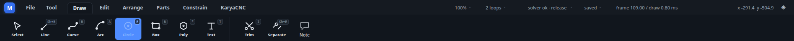

Tab Draw — Menggambar
Tab Draw adalah tempat utama untuk membuat geometri. Semua alat tersedia sebagai tombol besar di ribbon dan melalui tombol pintas huruf pada keyboard.

Contoh menggambar kotak dan garis


1. Daftar alat dan tombol pintas
| Tombol | Alat | Keterangan |
|---|---|---|
| Shift+B | Garis (Line) | Klik titik awal, titik akhir, dan seterusnya untuk rangkaian garis. |
| B | Kurva Bézier (Curve) | Klik untuk sudut, klik-tahan-geser untuk lengkung halus. |
| * | Poligon / Bintang (Poly) | Titik pusat dulu, lalu radius dan sudut awal. Roda mouse atur persen dalam bintang. |
| A | Busur (Arc) | Busur 3 titik: dua titik ujung lalu titik tempat lengkung. |
| E | Elips / Lingkaran | Klik dua sudut kotak pembatas (tahan Ctrl = pusat di klik pertama), lalu atur Width & Height; selalu dibuat sebagai kurva spline. |
| R | Kotak (Box) | Klik dua sudut berlawanan (tahan Ctrl = pusat di klik pertama), lalu konfirmasi Width, Height & Round radius. |
| T | Teks (Text) | Isi konten, pilih font, gaya, ukuran, jarak huruf. |
| I | Potong (Trim) | Potong di persimpangan. Ctrl+klik menyusuri seluruh rantai. |
| Shift+E | Pisah (Separate) | Membelah tanpa menghapus (Trim tanpa kehilangan). |
| ; | Catatan (Note) | Tekan ; untuk menulis catatan kuning langsung di posisi kursor, atau klik tombol Note untuk menaruhnya di tengah kotak pembatas objek terpilih (tanpa dialog prompt; tidak pernah dipotong atau dikirim ke KaryaCNC). |
| Ctrl+M | Transformasi (tab Edit) | Pindahkan, putar, atau skala objek terpilih. |
2. Tips saat menggambar
- Tahan Shift saat menggambar: sudut menempel ke kelipatan 15°.
- Tahan Alt saat menggambar: membalik status Snap sementara.
- Enter menyelesaikan bentuk, Esc membatalkan atau mengambil garis/node terakhir kembali.
- Klik titik awal lagi untuk menutup lingkaran (loop lengkap).
- Saat menggambar, titik baru menempel ke titik yang sudah ada, titik tengah garis, dan titik terdekat pada garis — masing-masing membuat constraint Midpoint / On line yang sungguhan.
- Shift+5 (%) menghidupkan/mematikan snap. Mati berarti mati: tidak ada yang menempel sama sekali.
- Grid snapping hanya aktif saat grid nyala (#).
Urutan prioritas snap
Saat snap nyala, kursor menempel ke target pertama yang ditemukan mengikuti urutan ini (dari paling spesifik ke paling umum):
- Titik yang sudah ada (berwarna sama akan dilebur/weld; warna lain hanya dipakai sebagai posisi, ditandai marker amber snap-only).
- Titik asal (0,0).
- Geometri garis/busur/kurva — termasuk midpoint dan on line.
- Pusat loop tertutup (centroid; untuk lingkaran = pusatnya).
- Grid — hanya bila grid tampil (#).
Jika snap dimatikan lewat menu Tool (Snap leaves constraints), menempel ke garis tidak lagi meninggalkan constraint Midpoint / On line.
3. Alat khusus
Kotak (Box, R) — Lebar, Tinggi & sudut membulat
Tarik dua sudut berlawanan seperti biasa (tahan Ctrl untuk menggambar dari titik tengah sebagai pusat kotak; putar roda mouse untuk menyetel radius awal). Saat titik kedua diklik, muncul dialog 2 kolom berisi Width, Height, dan Round radius (0 = sudut tajam) sehingga ketiganya bisa langsung disesuaikan sekaligus.
Kurva Bézier
Klik untuk sudut, klik-tahan-geser untuk lengkung halus, klik node pertama untuk menutup. Enter, klik ganda, atau klik kanan mengakhiri kurva; Esc membatalkan. Preview mengikuti aturan yang sama, jadi yang terlihat itulah hasilnya.
Busur (3 titik)
Klik dua titik ujung yang dilalui busur, lalu titik ketiga tempat busur melengkung. Jika tiga titik segaris, alat menolak. Tekan Space di langkah ketiga untuk beralih antara busur dan lingkaran penuh melalui ketiga titik.
Potong (Trim)
Klik satu span, bagian itu hilang, sisanya tetap. Ctrl+klik menyaluri seluruh rantai garis, busur, dan kurva yang bersentuh sekaligus. Kurva tertutup tidak punya ujung, jadi klik biasa membelah di setiap persimpangan.
Pisah (Separate)
Sama seperti potong tetapi tidak menghapus apa pun — seperti Trim tanpa kehilangan bentuk.
Draw Tab — Sketching Tools
The Draw tab is where you create geometry. Every tool is available both on the ribbon and via single-key or chorded shortcuts.
Drawing Boxes & Lines
1. Tool & Shortcut List
| Shortcut | Tool | Description |
|---|---|---|
| Shift+B | Line | Click start point, end point, and continue for connected segments. |
| B | Bézier Curve | Click for sharp corners, click-hold-drag for smooth tangent handles. |
| * | Polygon / Star (Poly) | Click center, then outer radius and start angle. Mouse wheel adjusts inner star ratio. |
| A | Arc | 3-point arc: two endpoints, then a third point on the curve. |
| E | Ellipse / Circle | Click two opposite corners of the bounding box (hold Ctrl for center-base), then confirm Width & Height; always creates an editable spline curve. |
| R | Box | Click two opposite corners (hold Ctrl for center-base), then confirm Width, Height & Round radius. |
| T | Text | Enter text, choose font, weight/style, height, and tracking. |
| I | Trim | Trim segments at intersections. Ctrl+click follows an entire chain. |
| Shift+E | Separate | Split at intersections without deleting any segment. |
| ; | Note | Press ; to type yellow annotations inline at the cursor, or click the Note button to place/edit an inline note at the center of the selected object's bounding box (never cut or exported to KaryaCNC). |
| Ctrl+M | Transform (Edit tab) | Move, rotate, or scale selected geometry precisely. |
2. Drawing Tips & Snapping
- Hold Shift while drawing: locks angles to 15° increments.
- Hold Alt while drawing: temporarily inverts Snap state.
- Enter finishes the current shape; Esc cancels or steps back the last node/line.
- Click the starting point again to close a chain into a closed loop.
- Snapping onto existing points, line midpoints, or edges creates real Midpoint / On-line constraints automatically.
- Shift+5 (%) toggles Snap on/off globally. Off means zero snapping.
- Grid snap is only active when the grid is visible (#).
Snap Priority Order
When Snap is enabled, the cursor latches onto the first match in this priority order:
- Existing points (same color welds automatically; different color snaps position-only with an amber snap-only indicator).
- Origin (0,0).
- Edges (line/arc/curve) — including midpoint and on-line.
- Closed loop center (centroid; circle center).
- Grid — only while grid display is active (#).
Disabling Snap leaves constraints in the Tool menu allows snapping to geometry without adding Midpoint / On-line constraints.
3. Tool-Specific Behaviors
Box (R) — Width, Height & Rounded Corners
Drag two opposite corners as usual (hold Ctrl to draw from the first point as the center; scroll the mouse wheel to set the initial fillet radius). On placement, a 2-column dialog presents Width, Height, and Round radius (0 = sharp) together in one step.
Bézier Curve (B)
Click for corners, click-drag for smooth handles, or click the first node to close. Enter, double-click, or right-click ends the curve; Esc cancels.
3-Point Arc (A)
Click two endpoints, then the bulge point. Collinear points are rejected. Press Space on the third step to toggle between an arc and a full 3-point circle.
Trim (I)
Click any span to remove up to intersections. Ctrl+click trims along connected chains. Closed loops split cleanly at every crossing.
Separate (Shift+E)
Splits spans at intersections just like Trim, keeping every resulting piece.